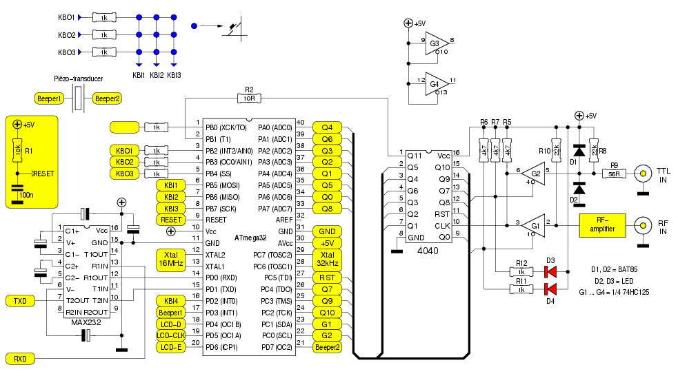
Het hart van de schakeling wordt gevormd door een
microcontroller: een ATmega32.
Links daarvan zien we de traditionele MAX232.
Die zorgt er voor, dat de microcontroller kan communiceren met
een PC, zodat metingen geautomatiseerd kunnen worden.
Onmiddelijk rechts van de μC trekt een 47HC4040 de
aandacht. Dat is een 12-stage teller, die toelaat hogere
frequenties ―tot zo'n 75MHz― te meten dan de μC aankan.
Vermits die laatste alle uitgangen van de teller kan uitlezen,
gaat er geen puls verloren.
Uiterst rechts zien we nog twee buffers uit een 74F125, waarmee
de μC tussen twee ingangen kan kiezen: een
TTL-compatiebele ingang of een ingang die voorzien is van een
voorversterker.
Wat niet op het schema te zien valt, is een 3-draads LCD-interface en de bijbehorende LCD-module.
Verder zijn enkele weerstanden (R3, R4) niet in het schema terug te vinden. Het zijn, net als R2, vermomde draadbruggen. Op de layout zijn ze toegevoegd om het grondvlak zoveel mogelijk “doorgang te verlenen”.
De (enkelzijdige) print is ontworpen met een programma dat naar de veelzeggende naam pcb luistert. Ik toon even een screenshot: 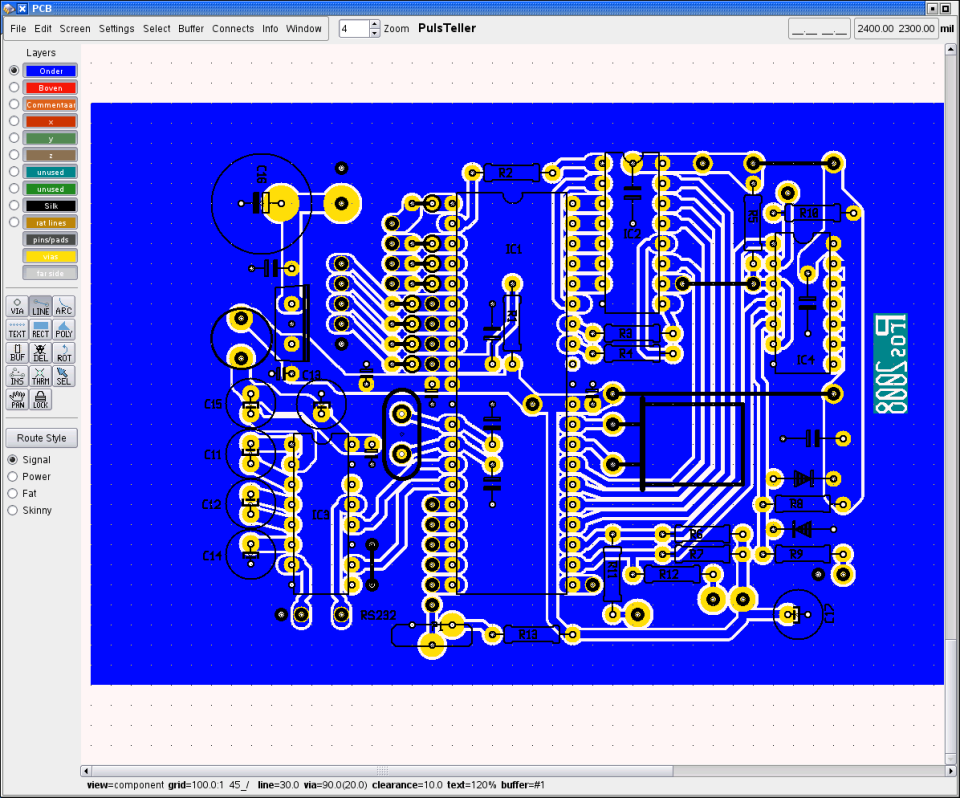
De komponentenopstelling komt aardig overeen met het schema.
Na afdrukken, belichten, ontwikkelen en etsen is dit het resultaat:
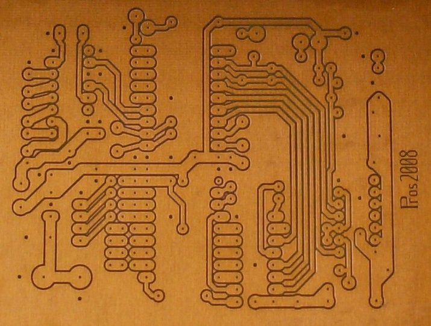
Dit is ―in tegenstelling tot het vorige plaatje― van de
onderzijde gezien.
De volgende stappen zijn: boren, bestukken en solderen. En dan
ziet het er zo uit:
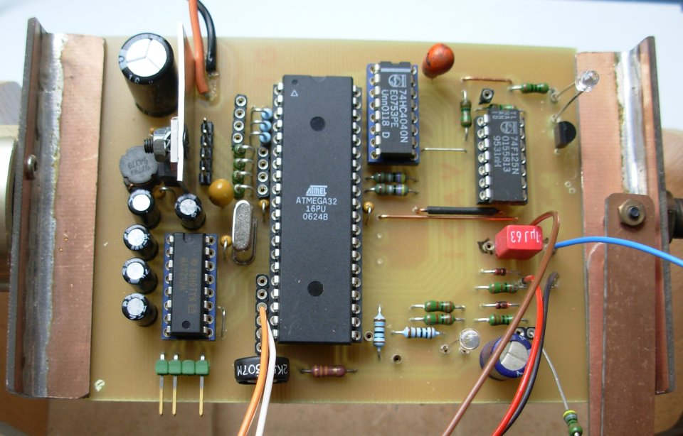
Zo, dat was het eenvoudige deel. Nu de behuizing nog...
Na het nodige zaag- en freeswerk liggen enkele onderdelen klaar om samengevoegd te worden:
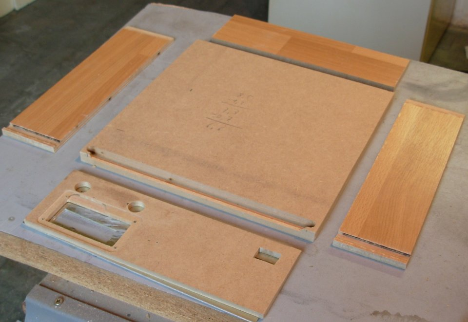
De bodem bestaat uit MDF-plaat met een dikte van 12mm.
Voor de zijkanten en de achterkant werd gekozen voor HDF;
laminaat, om precies te zijn. Dat is steviger en het oppervlak
is van een harde bekleding voorzien.
Om later een goede lijmverbinding tussen de HDF-platen te
bekomen, is het nodig de harde oppervlaktelaag weg te frezen op
de plaatsen waar de lijm aangebracht moet worden. Dat zie je op
bovenstaande foto bij de zijpanelen, helemaal achteraan.
De frontplaat bestaat uit twee lagen: ALU-plaat en MDF. Maar daar hebben we het later over...
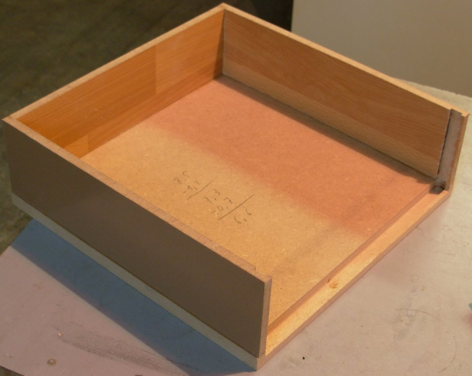
Houtlijm is al wat nodig is, om er een stevig geheel van te maken. Werkwijze: alle te lijmen oppervlakten van een dun laagje houtlijm voorzien - een tiental minuten laten drogen - de onderdelen op- en tegen mekaar plaatsen en goed positioneren - stevig aandrukken en vervolgens de lijm laten harden.
De bodemplaat is met opzet iets te groot gemaakt; een frees zoals de tweede van rechts op de foto maakt met de uitstekende rand korte metten nadat de lijm uitgehard is.
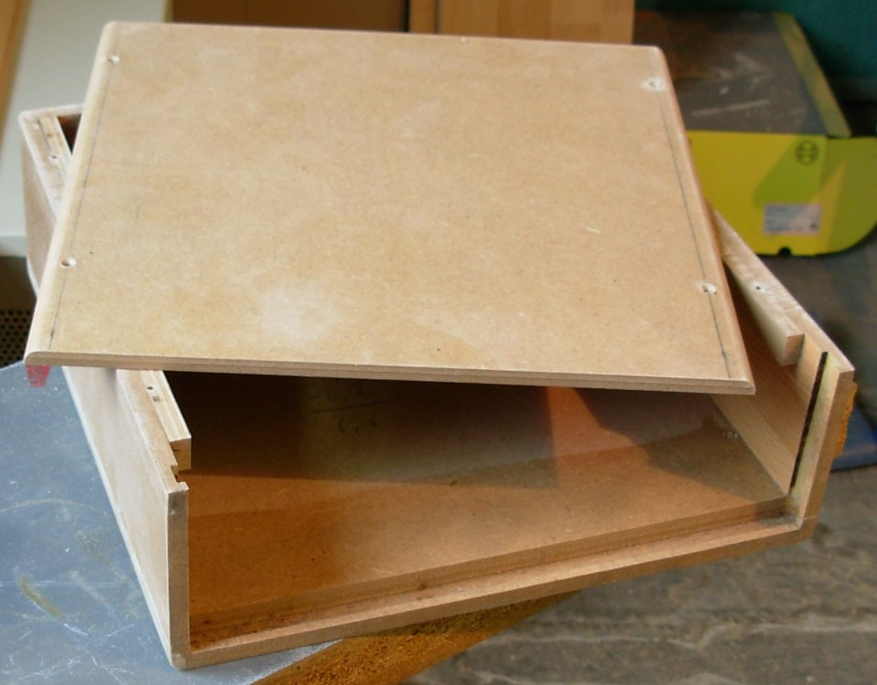
Een andere frees werkt ook de hoekige kanten weg. Ondertussen is ook het deksel er bij gekomen. Dit is MDF-plaat met een dikte van 6mm.
Nu is MDF niet al te sterk. Vooral de zijkanten zijn zacht en
stootgevoelig. Als we dan ook nog eens sleuven gaan frezen nabij
de zijkant, wordt die plaats wel erg kwetsbaar. Er bestaat
echter een eenvoudige remedie om het geheel wat meer stevigheid
te geven: meng (witte) houtlijm met een beetje water, zodat een
goed-uitstrijkbaar papje ontstaat. “Schilder” hiermee de
zijkanten en de zwakke delen. De verdunde lijm zal enigzins in
de MDF-plaat dringen en, na verharding, voor een hard oppervlak
zorgen.
De plaat zal door deze bewerking een tikkeltje uitzetten, zodat
de frees er weer bij te pas moet komen.
Wat volgt is: plamuren waar nodig, schuren, grondlaag aanbrengen en toplaag aanbrengen. Het resultaat ziet er dan zo uit:
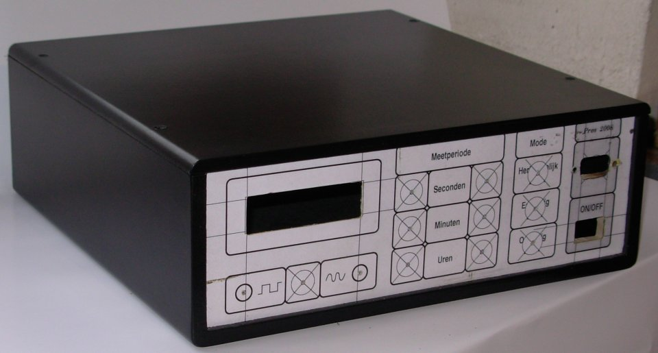
Hoe knap een schakeling ook ontworpen is, en hoe goed ze ook
gebouwd is, de toevallige bewonderaar zal zijn eerste oordeel
laten leiden door datgene wat het meest in het ook springt: het
frontpaneel.
Ziet dat er wat rommelig of amateuristisch uit, dan zal ook de
knapste schakeling weinig of geen indruk op hem maken. Ik denk
hierbij aan een ALU-plaat, waar wat gaten in geboord zijn voor
potmeters, schakelaars, connectors e.d. naast een rechthoekige
opening voor een display of zo. Om dat display te bevestigen
worden dan nog wat extra-gaten geboord, zodat de voorkant
ontsiert wordt door de koppen van de schroefjes. Het geheel
wordt vervolgens afgewerkt met labeltjes die ―op z'n best―
afkomstig zijn van een Dymo-labelmaker.
Dat kan beter. Het kan véél beter, zonder diep in de
geldbeugel te tasten.
Als we de frontplaat samenstellen uit een ALU-plaat met een
dikte van 1mm en een MDF-plaat van 6mm dikte, kunnen we die
laatste gebruiken om allerlei onderdelen te bevestigen.
Die twee onderdelen worden ―na bewerking― op mekaar gelijmd,
en vervolgens in de sleuf geschoven die we voordien in de
behuizing uitgefreesd hadden.
Eerst nemen we de ALU-plaat onder handen. Aluminium is erg
krasgevoelig, daarom wordt op de voorkant eerst een vel dun
karton gekleeft met behulp van Power-Pritt. Dat geeft een goede
hechting, en we kunnen alles nadien moeiteloos verwijderen door
het een tijdje in water te laten weken.
Teken nu met een grafisch programma naar keuze de layout voor
het frontpaneel. Een vector-georiënteerd tekenpakket, waar je
de afmetingen meteen in mm kan aflezen, lijkt me wel het
handigst. Voor het nodige zaag- en boorwerk kunnen tijdelijk
extra-aanduidingen aangebracht worden.
Dat ziet er dan zo uit:
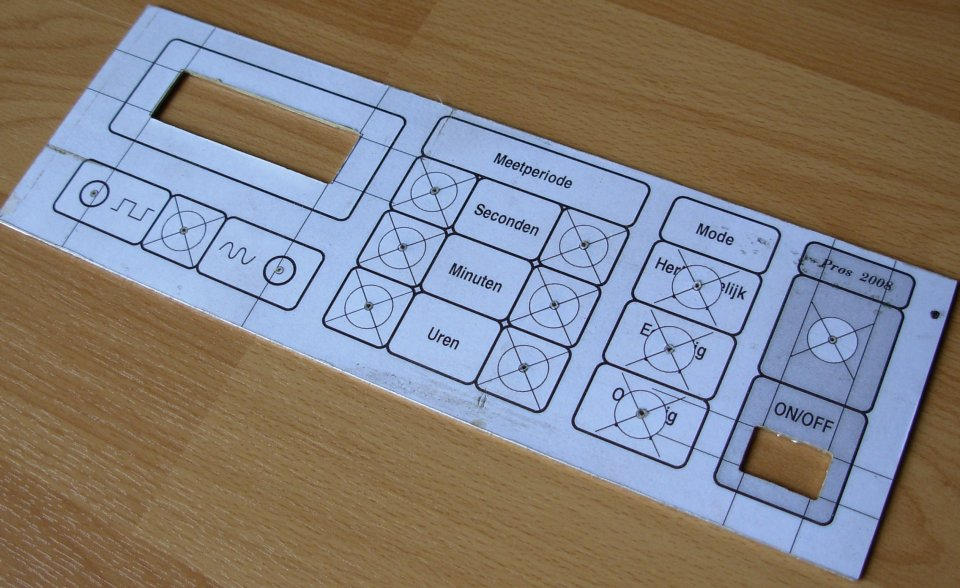
In de MDF-plaat voorzien we de nodige uitsparingen. Een voorbeeld toont de uitsparing voor het display:
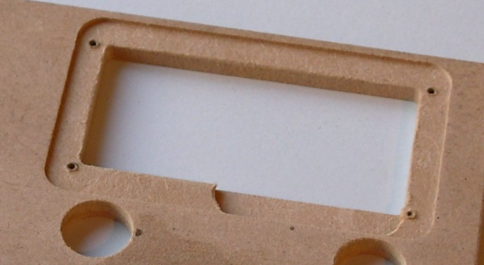
Nu kunnen we de bevestigingsschroefjes enkel door de MDF-plaat steken, zonder dat daar op de frontplaat iets van te merken valt. Even testen of alles netjes past:
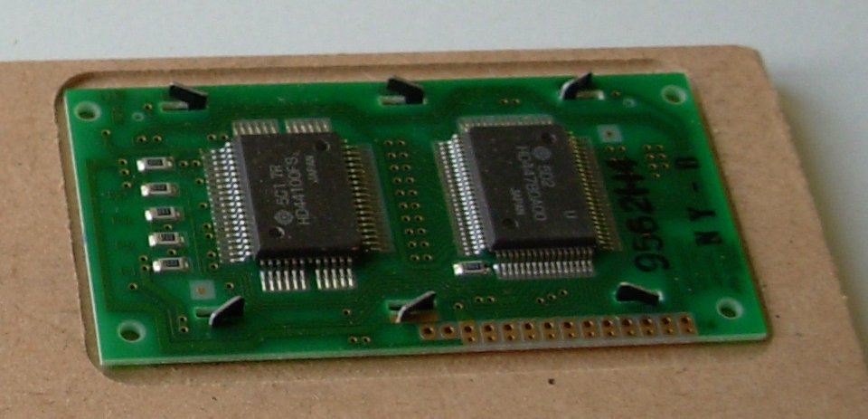
Wel, toen paste het netjes. Nu niet meer...
De bedoeling was namelijk, een 2 x 16 karakter-display met
backlight te gebruiken voor de uitlezing. Ik had er enkele
besteld, en dacht ondertussen slim te zijn door voorlopig een 2
x 16 display zonder backlight te gebruiken, in de
veronderstelling dat het eigenlijke scherm wel dezelfde
afmetingen zou hebben.
Niet dus. Het scherm is niet alleen breder, maar ook minder
hoog...
Afin, lesje geleerd.
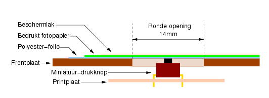 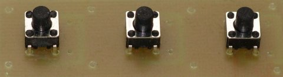
Voor de toetsen maken we gebruik van miniatuur-drukknopjes, geschikt voor printmontage. Voor elke toets wordt in het frontpaneel een gat geboord van 13mm doorsnee. Over de ganse frontplaat wordt eerst een vel polyester-folie gekleefd. Dat is sterk materiaal, maar veerkrachtig genoeg om de druk van een vinger door te geven aan de toetsen. Dat ziet er dan zó uit:
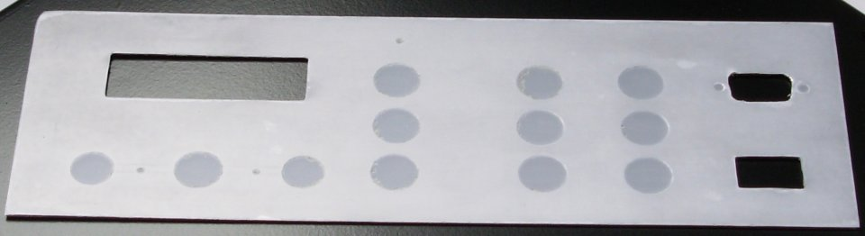
Daarover komt dan weer de afwerkingslaag in de vorm van bedrukt fotopapier, hetgeen dit resultaat oplevert:
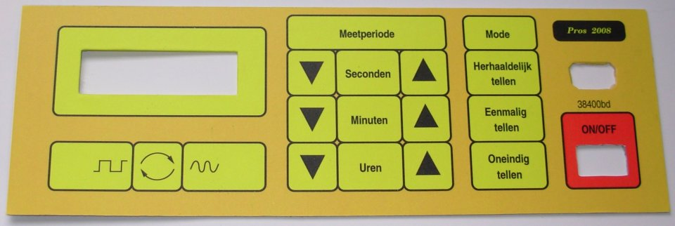
Teneinde beschadiging bij de verdere bewerking en later gebruik te voorkomen, krijgt het front enkele laagjes transparante lak uit een spuitbus over zich heen. Het is daarbij belangrijk, te beginnen met dunne laagjes, die vanop ruime afstand (50cm) opgespoten worden. Het oplosmiddel van de lak kan zowel toner uit een laserprinter als inkt doen uitvloeien!
Om één en ander tegen mekaar te lijmen, is gebruik gemaakt
van Power-Pritt. Dat is lijm in stiftvorm, en dus eenvoudig aan
te brengen op beide te lijmen vlakken. Vervolgens de vlakken op
mekaar plaatsen en aandrukken...
Ook om de ALU-plaat op het MDF te kleven is eveneens gemaakt van
dezelfde lijmstift, zij het enkel aan de ALU-zijde. De MDF-kant werd
bedekt met een dun laagje houtlijm, die eerst een tiental
minuten mocht drogen. Hoe raar het ook mag klinken: die twee
lijmsoorten vormen een hechte verbintenis.
De toetsen worden zó geplaatst, dat ze net de
polyester-folie raken. Nu volstaat een lichte druk op het
frontpaneel, om een toetsje te activeren.
Ook hier komt de MDF-plaat goed van pas, om er de printjes op te
bevestigen. Tijd om er de nodige bedrading aan te solderen:
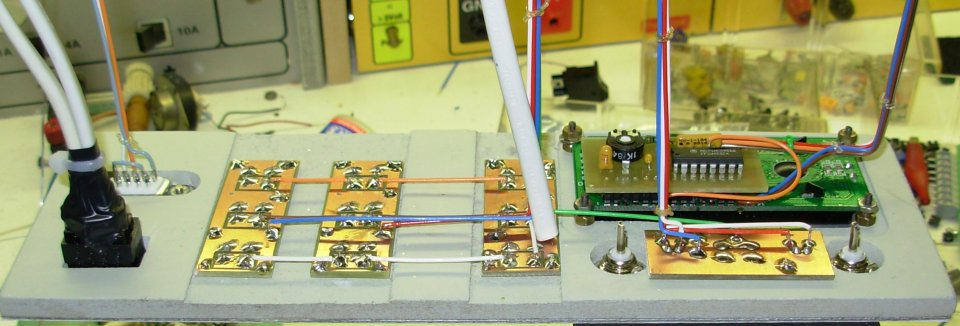
En toen liep het mis...
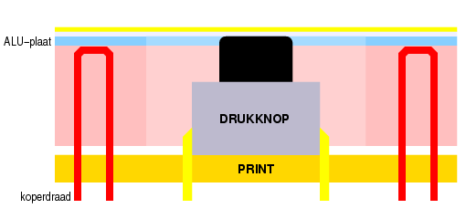
Ik had dit bedacht om de printjes met de druktoetsen te
bevestigen: boor bij elke hoek 2 gaatjes naast mekaar door de
print en de MDF-plaat - snij
vooraan een beetje MDF weg - plooi een koperdraadje en stop
beide uiteinden door de gaten - positioneer het printje, zodat
de druktoets tegen het polyester-papier aanleunt - soldeer de
draadjes vast op de print.
Dat is op zich een bruikbare manier, maar als je een ALU-plaat
tegen de voorzijde lijmt moet je er wel voor zorgen dat die geen
contact maakt met de draadjes!
Herstellen was wellicht te doen, maar verre van eenvoudig. De
ALU-plaat valt niet meer te verwijderen zonder ze te
beschadigen. En de niet-passende opening voor het display zat me
ook al niet lekker.
Kortom, tijd voor:
Een jonge snaak, die luistert naar de naam Technojunk, had me al
eens gevraagd of die ALU-plaat een noodzaak was. Nu heb je voor
sommige onderdelen absoluut een dunne plaat nodig. Denk maar aan
BNC-chassisdelen of een sub-D connector. Maar ook het LCD-scherm
is beter afleesbaar als het helemaal vooraan zit.
Toch, als die ALU-plaat kan weggelaten worden, scheelt dat een
boel werk en is het tevens goedkoper. Tijd voor een
experiment...
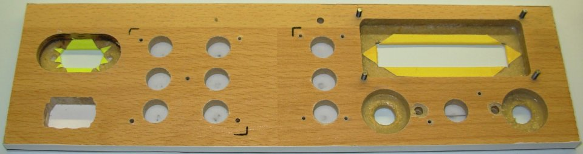
Men neme een stuk HDF-plaat. Men freest op de punten waar dit
nodig is het materiaal achteraan weg, zodat er 2mm overblijft.
Men “schildert” dit met verdunde houtlijm.
Het resultaat is ―zolang het niet om grote oppervlakten
gaat― stevig genoeg voor z'n doel. De harde oppervlaktelaag is
hierbij meer dan welkom.
Een dik uur later ziet het er zo uit:
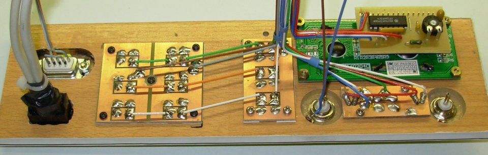
En als alles op z'n plaats zit, krijgen we dit:
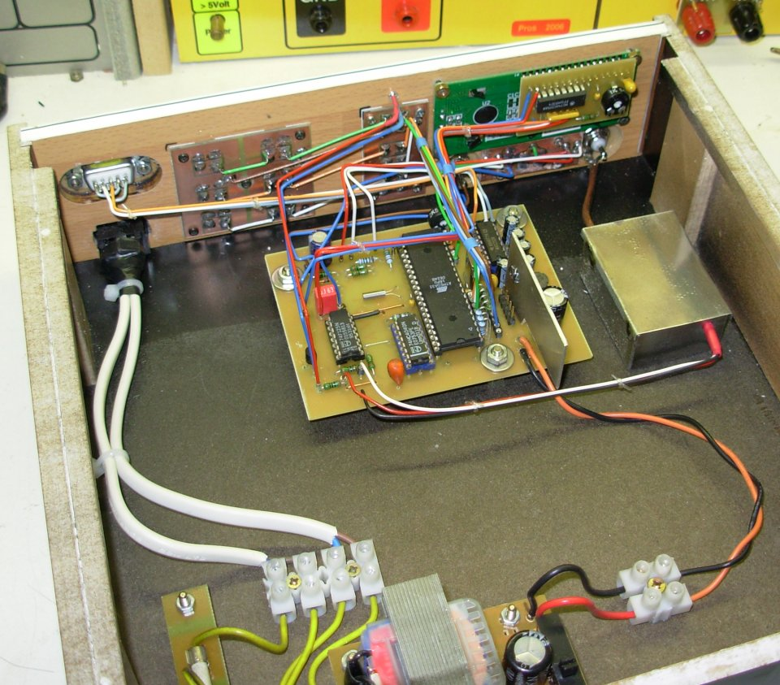
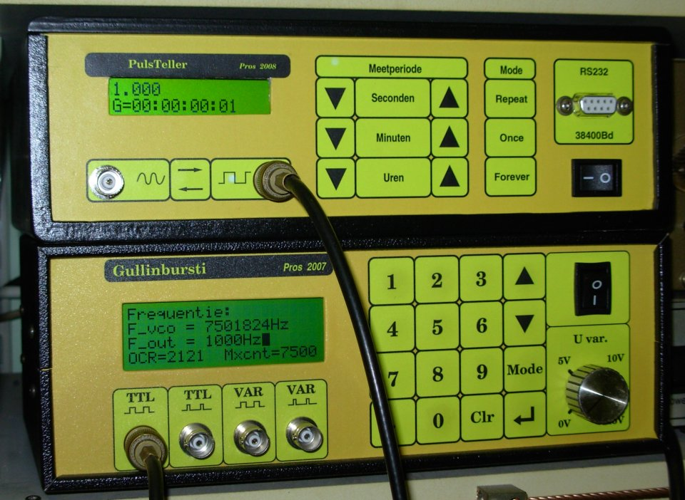
Wel, die twee komen alvast overeen wat de frequentie betreft. Dat is hoopgevend.
Wat de onderste behuizing betreft: dat is geen zelfbouw, maar het toonbeeld van een commerciële behuizing die meer kost dan de inhoud...
Zelf beschik ik niet over een professionele freesbank, maar met een topfrees en wat inventiviteit kan ook veel bereikt worden.
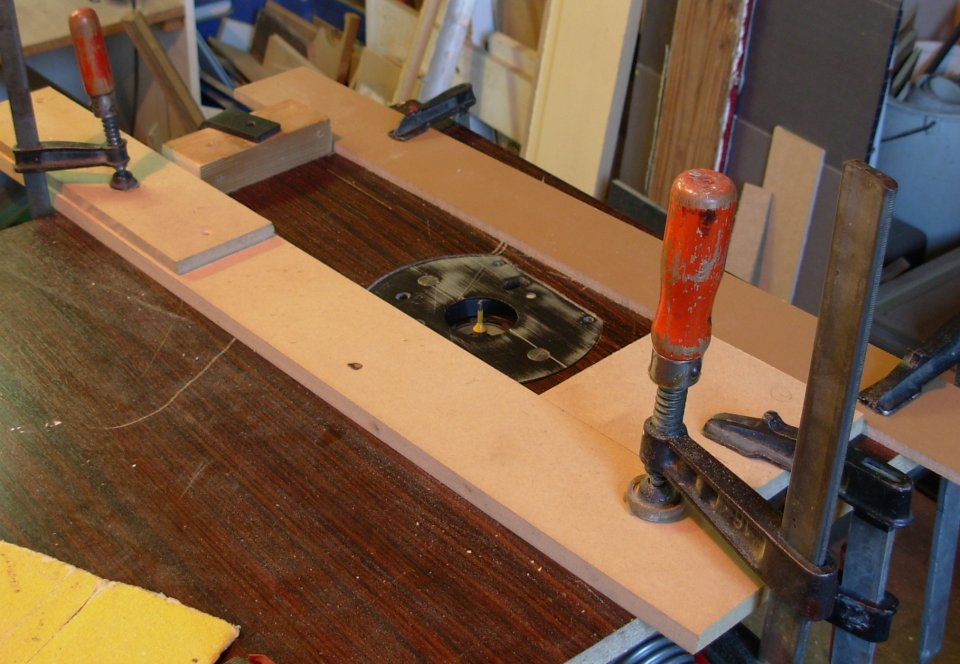
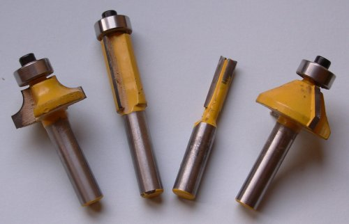 Hierboven is te zien, hoe de topfrees ondersteboven in een stuk meubelpaneel bevestigd is. De foto toont een opstelling, die gebruikt werd om het “venster” voor de LCD-module in de frontplaat uit te frezen.
Belangrijk bij deze aanpak is: hou je vingers uit de buurt van de frees! Zorg tevens voor een goede afzuiging. Zorg er voor, dat die automatisch in werking treedt als je de freesmachine aanzet. Daar is weinig voor nodig, zoals de NetSlaaf laat zien. Draag geen loszittende kledij. Bescherm je ogen!
Hiernaast enkele freesjes, die bij het project gebruikt werden. Van links naar rechts: om af te ronden, om de uitstekende bodemplaat te trimmen, algemeen gebruik en om af te schuinen.